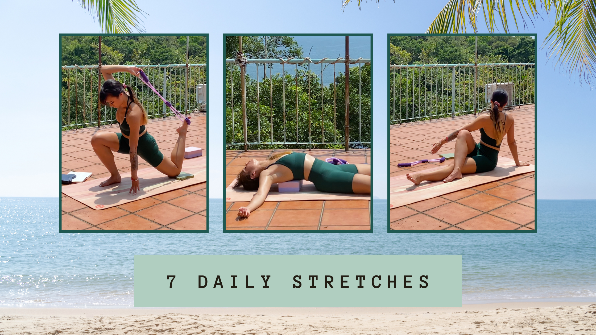

8 daily stretches for muscle tension
A 9 minute daily stretch routine to release muscle tensions all over the body.

Let’s be real, we all love a good stretch.
Whether it’s that moment before we pull ourselves out of bed, or after sitting at our desks all day.
Nothing compares to that satisfying feeling of lengthening your body, and feeling the tension melt away.
However, temporary relief from hours of tightness is not going to prevent any muscular issues we could experience if the tightness is left for too long.
This begs the question, are we stretching often enough?
Workout Breakdown:
- Kneeling Hip Stretch
- Figure 4 Glute Stretch
- Seated Spinal Twist
- Seated Forward Fold
- Thread the Needle
- Chest Opener
- Child's Pose
Why should we stretch daily?
Stretching doesn’t just help with flexibility. It teaches your body to return to its neutral posture and signals that it is safe to do so.
Our bodies have adapted to bad habits. For me, it’s breathing properly, and standing up straight. Chest breathing and sitting with a hunched back is an accumulation of bad habits developed over the last thirty years…
So how can we tackle these issues?
By stretching these parts of our body, and reminding it that it is safe to stay in these positions.
Of course, stretching is not enough to rectify these bad habits.
But it is a good habit with a high-return investment in your movement quality, because every minute you spend stretching could ease your body from hours of tightness later.
1. Kneeling Hip Stretch
The Kneeling Hip Stretch gently opens up the hip flexors, and returns your pelvis to its intended neutral position. This stretch can help relieve lower back pain and activate your glutes.
2. Figure 4 Glute Stretch
If you have tight or underactive glutes, this stretch is ideal! It loosens the deep gluteal muscles and the piriformis, which are important for good hip mobility.
3. Seated Spinal Twist
Your thoracic spine is responsible for your posture and shoulder blade retraction. The Seated Spinal Twist can relieve tension in your traps that’s caused from day-to-day physical activity.
4. Seated Forward Fold
The Seated Forward Fold is great for lengthening your entire posterior chain. This stretch targets all parts of your back and hamstrings. Releasing tension in this area can help with anterior pelvic tilt.
5.Thread the Needle
This stretch can ease a hunched back and tight shoulders. It opens the upper back, rear shoulders and lats, and daily practice can help with shoulder mobility.
6. Chest Opener
The Chest Opener targets your pecs and shoulders and can help with shoulder alignment and reduce upper trap strain by. Taking deep, controlled breaths can improve your breathing also.7. Child's Pose
Child’s Pose is an excellent stretch that decompresses the lower back, whilst stretching your shoulders and lats. Holding this pose, and taking deep, controlled breaths can help relax your nervous system, and ease any chronic tension in your spine and upper traps.